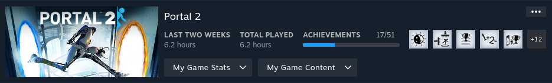

Why Portal 2?
After I played the first Portal game, my Partner kept telling me to play Portal 2. I didn't plan to delay it for 18 months, but life gets busy. In my Portal review, I mentioned it felt more like a demo than a full game. And playing Portal 2, that opinion was definitely confirmed.
Story
Portal 2 starts with you waking up long after the first Portal game ends. Aperture Science is in ruins after years without upkeep. A helper AI named Wheatley tries to get you out before everything collapses. Unfortunately for you, Wheatley isn't very bright. As he attempts to lead you to safety, he questions what GLaDOS has programmed him to believe. While escaping, Wheatley has you accidentally reactivate GLaDOS, the villain from the first game. GLaDOS splits you from Wheatley and forces you right back where you started: puzzle-solving. Spiteful about you killing her in Portal, she's now much more mask-off about trying to kill you during these tests. The rest of the game's story takes off from here. Since it's a short but engaging story, I'll leave the rest for you to discover. As you play, you'll uncover more about Aperture Science and GLaDOS's origins. I had a wonderful time learning more about the elements behind Portal and Portal 2's lore. I'm shocked that I had avoided so many spoilers, given how popular the game is.
After finishing the single player experience in Portal 2, you can explore the co-op mode. This mode continues the story from the single player campaign, with its own narrative. While not as detailed as the single player story, it mainly highlights the potential of multiplayer puzzles.
Audio & Video
The overall audio quality in the game is solid. Every sound effect is well-done and communicates exactly what it should. The standout feature is the voice acting. Each actor voices their character in a way that fits the personality perfectly. The humour is spot-on, leading to numerous memorable quotes and memes that are still popular today.
Like the audio, the graphics in the game are impressive. The sense of decay is captured in even the smallest details, adding to the atmosphere. As a puzzle game with various mechanics, each is visually represented in a clear and understandable way. With multiple overlapping mechanics, it's easy to distinguish between them and understand their functions. Hazards and interactive elements are also clearly differentiated. They've done an excellent job creating a 3D puzzle game that isn't confusing about what each element does.
Gameplay Mechanics
Portal is fundamentally a puzzle game. Its main feature is a portal gun that shoots two different portals for navigation. To make sure you stay within the bounds of the puzzle, you can only place these portals on specific tiles. As the game progresses, new elements are introduced that enhance each puzzle. Towards the end of the game, multiple elements will be combined to interact with one another. Some of these elements include launch plates, goo for speed or jumping, lasers, buttons, and a few others. The goal in all this is to beat each testing room. Completing a room usually leads directly into the next puzzle to solve.
Puzzle games aren't usually my go-to genre, but I was impressed with how well-made they are in Portal. Normally, I get annoyed and end up looking for solutions online. But playing through Portal, I genuinely enjoyed it and felt a real sense of achievement when I solved a tough puzzle. Having my Partner there to help was great too, especially since She had completed the game as a kid.
Replayability
Portal 2 offers two extra modes for added replay value. The first is the challenge mode, which is essentially a speedrunning competition. You race against friends to see who can finish each level fastest with the fewest portals. I wasn't too keen on this mode initially, but after topping my friends' scores on a few maps, I unexpectedly spent 10 hours on it. The second mode is a level builder. While I didn't create any levels myself, I did play ones made by my friends. Playing their creations from ten years ago, when they were teenagers, felt like a delightful time capsule. I didn't dive deeply into this mode, but there's a lot of potential in level builders, which I've always had a soft spot for.
Final Thoughts
I'm really glad my Partner got me to play both Portal games. I was aware of their huge popularity from all the memes in the 2010s. Everything in the game comes together beautifully, from the smallest sound effects and artistic details to the overarching story. Discovering the backstory of GLaDOS and Aperture Science was an unexpected and enjoyable aspect of the game. The digitized sound effects during fast movements made those moments feel thrilling. Honestly, there's not much to criticize or fault with the game. My only regret is not playing it earlier, waiting until long after the initial buzz had faded.
Should you complete Portal 2?
Absolutely, this is a game you should prioritize on your completionist list. There are achievements that require you to play the co-op mode with someone else. Some might see this as a downside, asking who's still playing Portal 2 nowadays. But my counter-argument is that you should be encouraging as many people as possible to experience this game.
Stats Gallery
Beaten!
Complete!